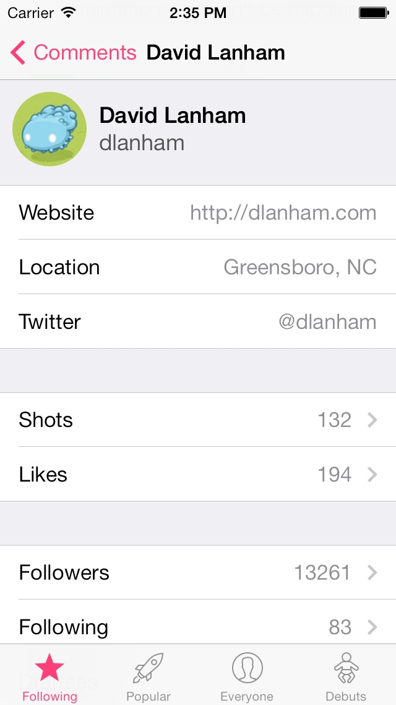
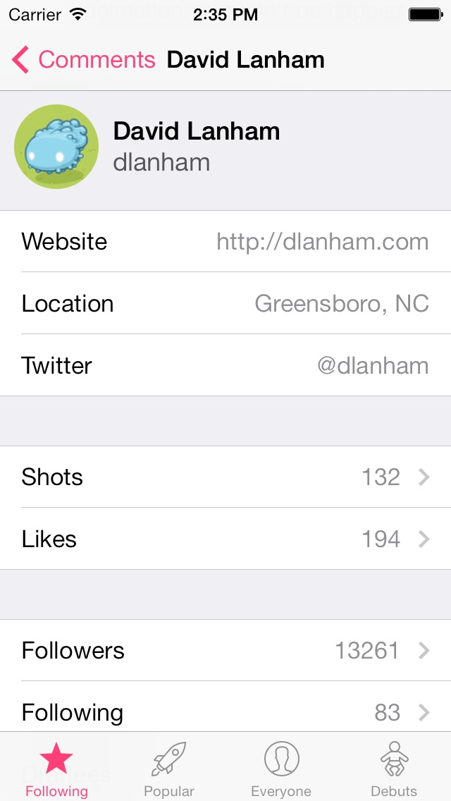

Two Viewing Modes
Basket offers two viewing modes for browsing shots: Grid mode for quick and easy browsing; and List mode for when you want more information on each shot.
HTML Comments
Tapping on any shot lets you view a complete list of the comments for that it. Basket will also parse any HTML code inside the comment allowing you to open any links it contains.


 

Browse All Your Feeds
With Basket you can keep up to date with all the newest shots on Dribbble. Browse shots from feeds such as popular, everyone and debuts or log in and view your personal following one.
User Profiles
Tapping on any user profile picture allows you to view all the information about that user including their shots, likes, followers and followees. You can also easily view your own profile by logging in and tapping your picture in the navigation bar.